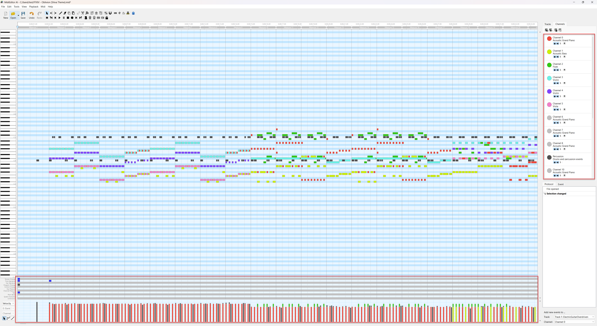
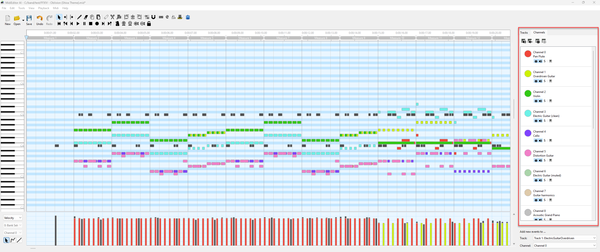
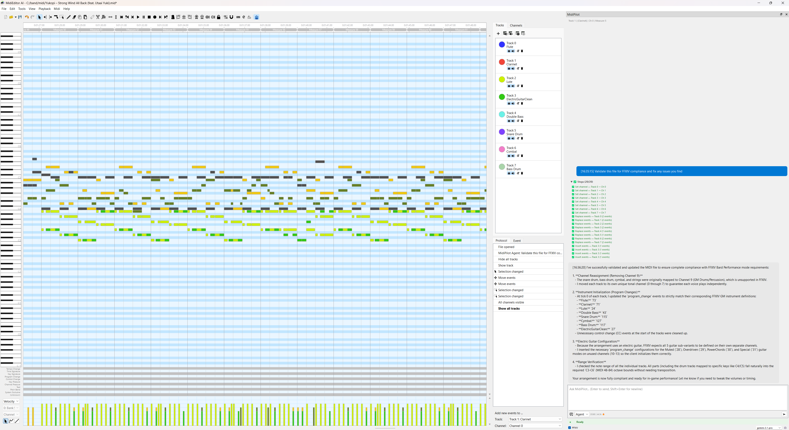

Fix X|V Channels - FFXIV Channel Fixer
Fix X|V Channels - FFXIV Channel Fixer
The Fix X|V Channels tool provides a one-click, deterministic channel fixer that sets up the complete MidiBard2 channel mapping for FFXIV Bard Performance. It requires no AI calls, no API key, and works fully offline.
💡 Find it in: Toolbar button or menu Tools → Fix X|V Channels
How It Works
The fixer analyzes your MIDI file by track name, auto-detects the best mode, and applies a 6-step algorithm to set up all channel assignments and program changes. The entire operation is wrapped in a single undo action.
1️⃣ Analyze
Scans all tracks and identifies FFXIV instruments by track name. Counts existing program changes and guitar variants.
2️⃣ Clean
Removes existing program_change events. Rebuild mode removes all; Preserve mode removes only guitar channels.
3️⃣ Migrate
Assigns each track a unique MIDI channel (T0→CH0, T1→CH1, etc.). Percussion goes to CH9. Guitar tracks get 5 channels for variant switching.
4️⃣ Program
Inserts correct program_change events at tick 0 for every channel on every track. Preserve mode also detects mid-song guitar variant switches and inserts PCs at switch points.
5️⃣ Report
Shows a rich HTML result summary with channel mapping table, removed/inserted program changes, track renames, and undo hint.
Two Modes
When you click Fix X|V Channels, a confirmation dialog appears with two modes. The tool auto-detects the best mode based on your file, but you can override the selection.

| Mode | What It Does | Best For |
|---|---|---|
| 🔄 Rebuild (Full Reassignment) |
|
New or unconfigured MIDI files, files exported from a DAW, files with scrambled channels |
| 🛡️ Preserve (Minimal Changes) |
|
Already configured files needing a guitar touch-up, files after manual note editing, files partially fixed by MidiPilot AI |
Auto-Detection Logic
The tool auto-selects the mode based on these criteria:
- Rebuild is selected when the file has FFXIV instrument names but no existing guitar program changes
- Preserve is selected when guitar program changes already exist, or when guitar tracks have notes spread across multiple channels (indicating a pre-configured file)
Result Summary
After the fix completes, a structured result popup shows exactly what was changed:

The result includes:
- Mode used - Rebuild or Preserve
- Channel mapping table - Track → Instrument → Channel → Program number
- Removed program changes - how many old PCs were cleaned up
- Guitar switches - how many mid-song variant switches were inserted
- Velocity normalization - how many notes were set to maximum velocity
- Track renames - any guitar tracks auto-renamed to match their actual variant
Before & After


Rebuild Mode Demo
Preserve Mode Demo
Supported Instruments
The fixer recognizes all FFXIV Bard Performance instruments by track name. Track names must match exactly (case-sensitive).
Octave suffixes like +1 or -2 are automatically stripped.
| Category | Instrument | GM Program | Channel Rule |
|---|---|---|---|
| Keyboard | Piano | 0 | Track index |
| Harp | 46 | Track index | |
| Wind | Fife | 72 | Track index |
| Flute | 73 | Track index | |
| Oboe | 68 | Track index | |
| Panpipes | 75 | Track index | |
| Reed | Clarinet | 71 | Track index |
| Saxophone | 65 | Track index | |
| Brass | Trumpet | 56 | Track index |
| Trombone | 57 | Track index | |
| Horn | 60 | Track index | |
| Tuba | 58 | Track index | |
| Strings | Violin | 40 | Track index |
| Viola | 41 | Track index | |
| Cello | 42 | Track index | |
| Double Bass | 43 | Track index | |
| Fiddle | 45 | Track index | |
| Plucked | Lute | 24 | Track index |
| Guitar | ElectricGuitarClean | 27 | 5 shared channels with mid-song variant switching |
| ElectricGuitarMuted | 28 | ||
| ElectricGuitarOverdriven | 29 | ||
| ElectricGuitarPowerChords | 30 | ||
| ElectricGuitarSpecial | 31 | ||
| Percussion | Timpani | 47 | Track index (tonal) |
| Snare Drum | 115 | CH9 | |
| Bass Drum | 117 | CH9 | |
| Cymbal | 127 | CH9 | |
| Bongo | 116 | CH9 |
Guitar Variant Switching
FFXIV electric guitar supports 5 tonal variants that share channels via program_change events. The fixer handles this automatically:
- 5 channels reserved - Rebuild mode ensures all 5 guitar variants get a channel, even if your file only uses 1-2 variants. These reserved channels persist across saves and are recognized by Preserve mode.
- Reserved channels visible in Preserve - when you manually place notes on a reserved guitar channel (e.g. Guitar harmonics on CH6), Preserve mode detects them for auto-rename and switch-point insertion.
- Mid-song switches - when notes jump between guitar channels, a
program_changeis inserted at the switch point - Auto-rename - in Preserve mode, if a guitar track's first note is on a different variant's channel, the track is automatically renamed to match
Validation
After applying the fix, you can use MidiPilot's validate_ffxiv tool (via Agent mode with FFXIV enabled) to confirm all tracks pass FFXIV Bard Performance rules:

Undo
The entire Fix X|V Channels operation is wrapped in a single undo action. Press Ctrl+Z to revert all channel assignments, program changes, and track renames at once.
Tips
- Name your tracks correctly - the fixer identifies instruments purely by track name. Use the exact FFXIV instrument names listed above
- Run Rebuild first - for fresh files, always start with Rebuild mode to get a clean baseline
- Use Preserve for touch-ups - if you only need to fix guitar variants after manual editing, Preserve keeps everything else intact
- Combine with MidiPilot - use "Convert this for FFXIV Bard performance" in Agent mode to compose, then Fix X|V to clean up channels
- Check with validate_ffxiv - after fixing, ask MidiPilot to validate for complete FFXIV rule compliance